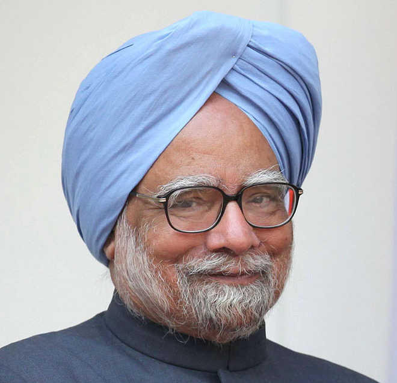

Chief Economic Adviser in the Ministry of Finance
Manmohan Singh was an Indian politician, economist, academic, and bureaucrat, who served as the 13th prime minister of India from 2004 to 2014. He was the fourth longest-serving prime minister after Jawaharlal Nehru, Indira Gandhi and Narendra Modi.A member of the Indian National Congress, Singh was the first Sikh prime minister of India.
Born in Gah in what is today Pakistan, Singh's family migrated to India during its partition in 1947. After obtaining his doctorate in economics from the University of Oxford, Singh worked for the United Nations during 1966–1969.
Early life
Singh was born to Gurmukh Singh Kohli and Amrit Kaur on 26 September 1932, in Gah, Punjab, British India (now in Punjab, Pakistan), into a family of Punjabi Sikh traders of Khatri background.
Even as prime minister years later, Singh wrote his apparently Hindi speeches in the Urdu script, although sometimes he would also use Gurmukhi, a script used to write Punjabi, his mother tongue.
After the Partition of India, his family migrated to Haldwani, India.In 1948 they relocated to Amritsar.
Education
His early schooling was in Urdu medium until the age of 10, after which he was enrolled in an upper-primary school in Peshawar.
He attended Panjab University, then in Hoshiarpur,Punjab, studying Economics and got his bachelor's and master's degrees in 1952 and 1954, respectively, standing first throughout his academic career. He completed his Economics Tripos at University of Cambridge in 1957. He was a member of St John's College.After Cambridge, Singh returned to India and served as a teacher at Panjab University.In 1960, he went to the University of Oxford for his DPhil, where he was a member of Nuffield College.
Early career
In 1972, Singh was chief economic adviser in the Ministry of Finance, and in 1976 he was secretary in the Finance Ministry.In 1980–1982 he was at the Planning Commission, and in 1982, he was appointed governor of the Reserve Bank of India under then finance minister Pranab Mukherjee and held the post until 1985.He went on to become the deputy chairman of the Planning Commission (India) from 1985 to 1987. Following his tenure at the Planning Commission, he was secretary general of the South Commission, an independent economic policy think tank headquartered in Geneva, Switzerland from 1987 to November 1990.
Political career
In June 1991, India's prime minister at the time, P. V. Narasimha Rao, chose Singh to be his finance minister.
Singh was first elected to the upper house of Parliament, the Rajya Sabha, in 1991 by the legislature of the state of Assam, and was re-elected in 1995, 2001, 2007 and 2013.
He took the oath as the Prime Minister of India on 22 May 2004.
In 2005, Prime Minister Singh and his government's health ministry started the National Rural Health Mission (NHRM), which mobilised half a million community health workers. On 2 July 2009, Singh ministry introduced the Right to Education Act (RTE) act.
Singh's government strengthened anti-terror laws with amendments to Unlawful Activities (Prevention) Act (UAPA).